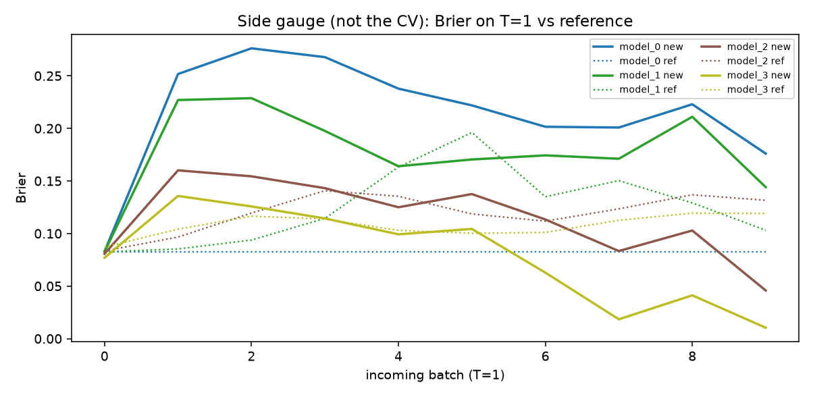

covertype (geographic order, class 2 vs rest). n_ref=10000, hidden=[64, 32],
k=3 layer groups → model_0…model_3.
新 batch 是 T=1。μ 来自该 freeze-depth 的 AnyMLP；PO-risk 是 leftover hop。
i* = argmini PO-risk：只更新最上面 i* 层，下面冻住。
建议：freeze below top 3 layer(s); train model_3（median i* = 3）



| model | PO-risk | Brier new | Brier ref |
|---|---|---|---|
| model_0 | 0.00135 | 0.176 | 0.08252 |
| model_1 | 0.001441 | 0.1441 | 0.1031 |
| model_2 | 0.0008871 | 0.04579 | 0.1316 |
| model_3 ★ | 0.0006295 | 0.01038 | 0.119 |
Brier 只是 side gauge，不是 CV。HH chosen 不是这张表的 Y。